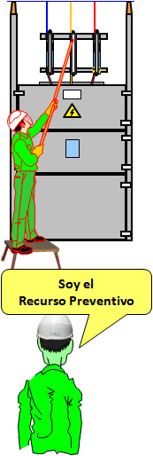

¿A qué actividades y medidas preventivas se refiere. . .?
Veamos un ejemplo: Se van a realizar maniobras, en la celda de AT, de la figura.
-
Las actividades y medidas preventivas que debe vigilar el Recurso Preventivo son:
-
Relacionadas con los trabajadores:
- Tienen la capacitación y formación adecuada para este trabajo.
- Conocen el manejo de los equipos a maniobrar.
- Conocen las distancias de seguridad.
- Conocen la aplicación de las “5 Reglas de Oro”.
- Dispone de los EPIs adecuados y conoce su manejo.
-
Relacionadas con la instalación y equipos:
- La instalación reúne las condiciones adecuadas para realizar este trabajo con seguridad.
- Existen y están en buen estado los EPCs a utilizar: banqueta, . . .
-
Relacionada con los métodos y procedimiento de trabajo:
-
Aplican correctamente manuales y procedimientos:
- MO.07.P2.03: Procedimiento de descargo.
- MO.07.P2.12: Señalización y bloqueo de elementos de maniobra y delimitación
- MO.07.P2.13: Procedimiento de comunicación entre COD y personal de operación local.
- . . .
- Utilización correcta de los documentos: Solicitud de Descargo y Permiso de trabajo.
-
Aplican correctamente manuales y procedimientos:
-
Relacionadas con los trabajadores: